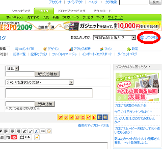
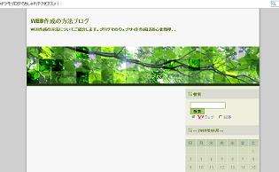

Seesaaブログの作り方
Seesaaブログはカスタマイズが可能な無料のブログサービスですので、詳細にブログを設定することができます。
当ブログは以前までSeesaaで作成していました。
独自ドメインにも対応しているので、レンタルサーバーではなく、ドメインだけ取得して無料のシーサーブログでという作り方もできます。
Seesaaブログの作り方の簡単な手順
Seesaaブログの作り方ですが、メールアドレスを用意してアカウントIDを取得し、サブドメインやタイトルを設定して記事を投稿すれば完成となります。
テンプレートが気に入らない場合は、背景色や画像を変えたり、文字の大きさを変えたりしてブログカスタマイズしましょう。
まず、SeesaaブログのアカウントIDを取得します。
アカウントの取得にはメールアドレスが必要になりますが、メルアドがない場合は事前にヤフーやグーグルで無料のメールアドレスを取得しておきます。
メールアドレスを取得したらSeesaaブログへ行きます。
ログイン用のメールアドレスやパスワードなどを入力してIDを取得します。
アカウントを取得したらブログを作り始めることになりますが、まず、「ブログのタイトル」とその「説明文」、そしてサイトのURLとなる「サブドメイン」を記入します。
ブログタイトルや説明文などはあとからでも変更できますが、ＵＲＬは後から変更できません。
ブログのテーマに関連した、誰でも簡単に予測できるURLを取得することをおすすめします。既に取得済みという場合が多いですので、ハイフンを追加したりして取得できるＵＲＬを探してみましょう。
そのほか、ニックネームやカテゴリ、テンプレートも選択します。
テンプレートものちほど変更できますが、右サイドバーで作る予定なら右サイドバーのどれかを選択し、両サイドバーなら両サイドバーのテンプレートを選択するようにしましょう。
記入したら「新しくブログを作成する」のボタンを押します。
管理画面の方に作成したブログが出てきますので、クリックすると記事投稿画面へと移動することができます。
とりえず、「ブログを見る」リンクをクリックすると自分のブログを見ることができます。

まだ記事を投稿していないので、このような感じで何も表示されていません。

次に実際に記事を投稿することになりますが、その前にカテゴリの設定をすることをおすすめします。
デフォルトでは日記になっていますが、なるべく自分のブログタイトルと関連のあるカテゴリに書き換えた方がのちのち良いでしょう。
たとえば、料理のレシピを紹介するブログなら、「イタリアン」とか「中華」などを、旅行記のブログなら「アジア」とか「ヨーロッパ」とかになると思います。
カテゴリを設定したら、次に実際に記事を投稿しましょう。
記事は投稿しても、後から書き直すこともできます。
下の「保存する」のボタンを押すと投稿されます。記事を投稿したら、とりあえずはブログが完成します。
実際にブログを見て確認してみると、デフォルトだとブログパーツや広告などが表示されているはずです。
「デザイン - コンテンツ」をクリックすると次のような画面が出現しますので、必要のないブログパーツなどは削除しましょう。
最低限必要なものとしては、「カテゴリ」や「最近の記事」、「過去ログ」などは残しておいた方がいいかと思います。
検索窓もできるだけ残しておいた方がいいかもしれません。削除する際は、×印を押した後、下の方にある設定を反映するボタンを押します。
また、広告欄などもシーサーブログの場合は強制ではありませんので、はずすことが可能になっています。
記事下広告やサイドバーの広告などをはずす場合は、「設定 - 広告設定」から広告の設定をすることができます。
ヘッダーバーをはずす場合は、「設定 - ブログ設定」の共通ヘッダーのチェックボタンを「表示しない」にして保存します。

カレンダーなどのブログパーツや広告をはずすとこのような感じになります。
さらに、デフォルトのテンプレートがあまり気に入らなかった場合は、スタイルシートでデザインを変えることができます。
Seesaaブログではフォトライブラリーの写真画像を無料で利用することができます。もし、デフォルトのテンプレート画像に気に入ったものがなければ、利用されてみることをおすすめします。
フォトライブラリーへは「デザイン - デザイン一覧」から移動することができます。
フォトライブラリーへと行き、画像を選択すれば、シーサーブログ用のスタイルシートが出力されます。
それをデフォルトのスタイルシートにコピペで上書きします。ブログのスタイルシートの場所は「デザイン - デザイン一覧」の下部のリンクから入ることができるので、そちらの方へと上書きします。
（補足）スタイルシートで、.text の箇所を変えると記事本文の文字の大きさを変えたり、色彩を変えることができます。
例えば、このように設定するとこのような感じになります。
.text {
font-size:14px;
line-height:150%;
color:#000000;
}
そのほかにも、日付をはずしたり、独自ドメインに設定してみたり、いろいろとブログの設定を変更することができますので、当ブログを参照されて見てください。
- ＦＣ２ブログの作り方
FC2ブログは利用者数も多く、html の編集やアフィリエイトも自由な人気の無料ブログサービスです。... - ブログタイトルの作り方とSEO対策
実際にブログを作成する際、ブログのタイトルのつけ方によって、アクセス数やアフィリエイト成果などに大きく影響してきます。... - ブログ広告での収入
アフィリエイトサービスに登録して、ブログ広告でたくさん収入を得ましょう。無料で登録できるアフィリエイトプログラムがいろいろあります。... - CSSで初心者簡単ブログカスタマイズ方法
ブログのデザイン的な見栄えの部分をカスタマイズするには、スタイルシート(CSS)で一括して変更します。... - シーサーブログＣＳＳと Firebug
ファイアーフォックス３が出てきたんでアドオンをレビューしようって思います。ブログの作成に役立つアドオンをいくつかインス...